Главная страница¶
Структура страницы¶
Шапка страницы
Кнопка перехода на главную страницу
Кнопка локализации
Кнопка создания новой формы
Кнопка профиля пользователя
Основная область страницы
Категории и их отображение
Доступные для продолжения прохождения формы
Все формы
Доступные для редактирования
Доступные для просмотра ответов
Пройденные формы
Шапка страницы¶
Кнопка перехода на главную страницу¶
Назначение¶
Переход на главную страницу форм.
Что отображается¶
Логотип форм и название сервиса, которые находятся в левом верхнем углу страницы.
Поведение элемента¶
При нажатии происходит переход на главную страницу сервиса.
Кнопка локализации¶
Назначение¶
Перевод содержимого страницы на доступные языки:
русский язык
английский язык
Что отображается¶
Второй элемент в шапке.
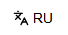
Поведение элемента¶
При нажатии происходит перевод всех элементов на странице.
Кнопка создания новой формы¶
Назначение¶
Позволяет пользователю создавать новую форму.
Что отображается¶
Кнопка с названием «+ Создать новую форму», которая стоит вторым элементом справа в шапке.
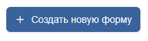
Поведение элемента¶
При нажатии происходит переход на страницу редактирования и создания формы.
Кнопка профиля пользователя¶
Назначение¶
Просмотр текущего аккаунта пользователя.
Что отображается¶
Первый элемент справа в шапке.
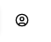
Поведение элемента¶
При нажатии появляется всплывающее окно, в котором видно никнейм пользователя, его почта и кнопка выйти.
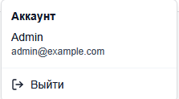
При нажатии на кнопку Выйти, произойдет переход на страницу входа.
Основная область страницы¶
Категории¶
Доступные для продолжения прохождения формы¶
Назначение¶
Отображение списка форм, доступных для продолжения прохождения. В этой категории отображаются именно черновики незаконченных форм. Пройти с нуля можно только по ссылке на форму, которая выдается на странице результатов формы.
Что отображается¶
Первая кнопка в каталоге категорий.
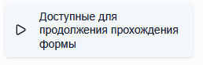
При появлении черновика, незаконченная форма отобразится на центральной панели.
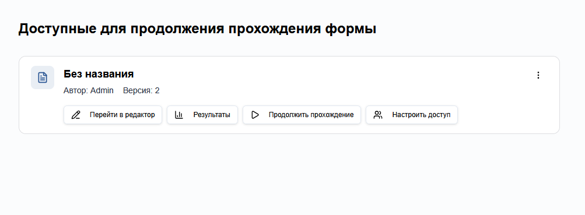
Поведение¶
В зависимости от роли пользователя, проходящего форму, будут появляться соответствующие кнопки:
Пользователи с ролью редактора (создатель формы и те, кому выдали доступ) получат доступ к действию «Перейти в редактор», которое перенесет на страницу редактирования формы. Также для пользователей-редакторов доступно действие «Настроить доступ», которое позволяет настраивать доступ к форме у других пользователей. Также для редакторов есть доступное действие «Результаты», которое позволяет посмотреть результаты ответов на форму. Соответственно, действие «Продолжить прохождение» также присутствует.
Пользователи с ролью наблюдателя получают доступ к действиям «Результаты» и «Продолжить прохождение».
Пользователи без роли будут иметь доступ только для продолжения прохождения формы.
Также можно увидеть Автора формы, ее версию и название формы. В правом верхнем углу формы есть знак троеточия, при нажатии на который откроется панель доступных действий. Отображаются действия, доступные в зависимости от роли пользователя, также появляется кнопка свойства, при нажатии на которую можно увидеть свойства формы. Также появляется действие удалить форму (черновик).
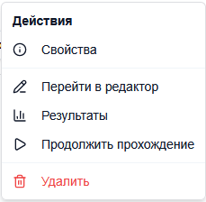
Все формы¶
Назначение¶
Отображение всех форм, к которым у пользователей есть доступ.
Что отображается¶
Вторая кнопка в каталоге категорий.
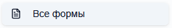
При создании формы или получении доступа к форме, здесь появится форма с соответствующими действиями.
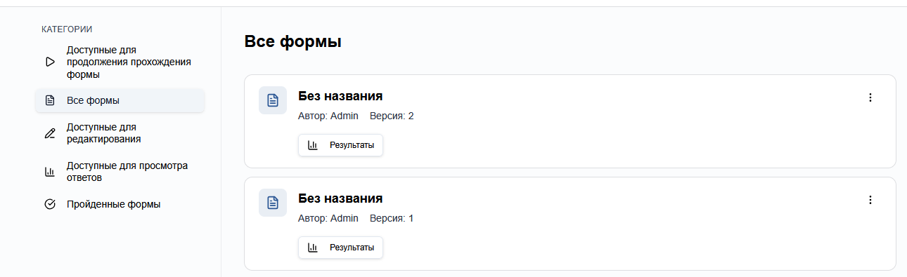
Поведение¶
В зависимости от роли пользователя, проходящего форму, будут появляться соответствующие кнопки:
Пользователи с ролью редактора имеют кнопки «Результаты», «Перейти в редактор» и «Настроить доступ».
Пользователи с ролью наблюдателя имеют кнопку только «Результаты».
Также можно увидеть Автора формы, ее версию и название формы. В правом верхнем углу формы есть знак троеточия, при нажатии на который откроется панель доступных действий. Отображаются действия, доступные в зависимости от роли пользователя, также появляется кнопка свойства, при нажатии на которую можно увидеть свойства формы. Также появляется действие удалить форму у создателя и отказаться от доступа у пользователей с доступом.
Доступные для редактирования¶
Назначение¶
Отображение всех форм, которые пользователь может редактировать. Эта вкладка выступает в роли фильтра, чтобы уменьшить количество отображаемых форм.
Что отображается¶
Третья кнопка в каталоге категорий.
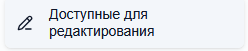
При создании формы или получении доступа к форме, здесь появится форма с соответствующими действиями.
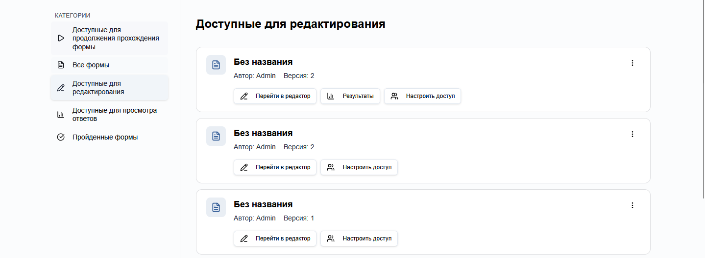
Поведение¶
Здесь будут отображаться формы, к которым пользователь имеет доступ как редактор или которые создал. Кнопка результатов появляется только у последних версий форм.
Также можно увидеть Автора формы, ее версию и название формы. В правом верхнем углу формы есть знак троеточия, при нажатии на который откроется панель доступных действий. Отображаются действия, доступные в зависимости от роли пользователя, также появляется кнопка свойства, при нажатии на которую можно увидеть свойства формы. Также появляется действие удалить форму у создателя или отказаться от доступа у пользователей с доступом.
Доступные для просмотра ответов¶
Назначение¶
Отображение всех форм, у которых пользователь может просмотреть результаты опроса. Эта вкладка выступает в роли фильтра, чтобы уменьшить количество отображаемых форм.
Что отображается¶
Четвертая кнопка в каталоге категорий.
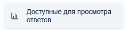
При создании формы или получении доступа к форме, здесь появится форма с соответствующими действиями.
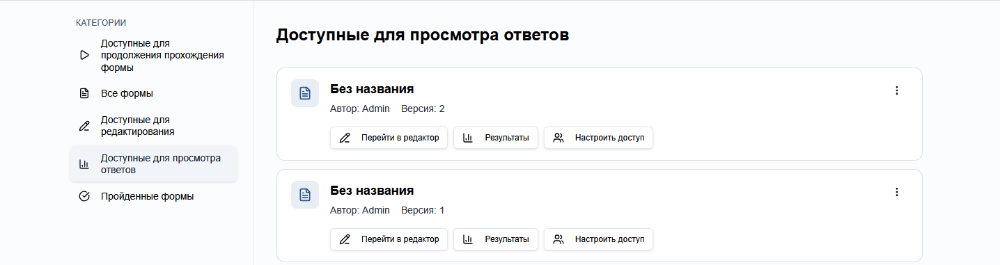
Поведение¶
Здесь будут отображаться формы, к которым пользователь имеет доступ как наблюдатель или которые создал. Здесь будут появляться только последние версии форм.
Также можно увидеть Автора формы, ее версию и название формы. В правом верхнем углу формы есть знак троеточия, при нажатии на который откроется панель доступных действий. Отображаются действия, доступные в зависимости от роли пользователя, также появляется кнопка свойства, при нажатии на которую можно увидеть свойства формы. Также появляется действие удалить форму у создателя или отказаться от доступа у пользователей с доступом.
Пройденные формы¶
Назначение¶
Отображение всех пройденных пользователем форм.
Что отображается¶
Пятая кнопка в каталоге категорий.
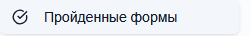
При прохождении формы здесь появятся формы.
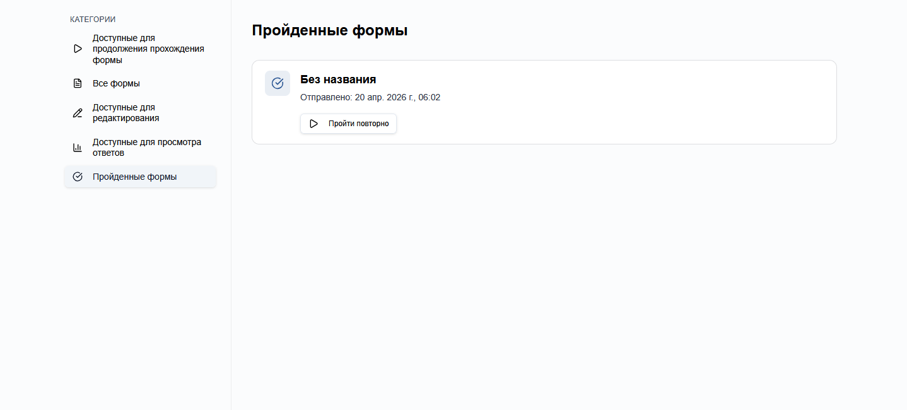
Поведение¶
Если редакторы формы разрешили повторно проходить форму, то появится кнопка Пройти повторно, которая совершит переход на страницу прохождения формы.
Также здесь отображается название формы, когда был отправлен ответ.